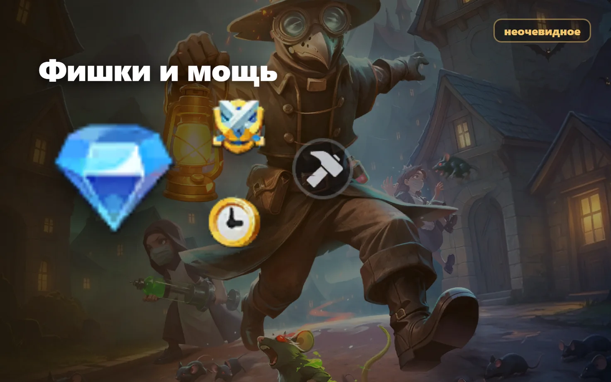
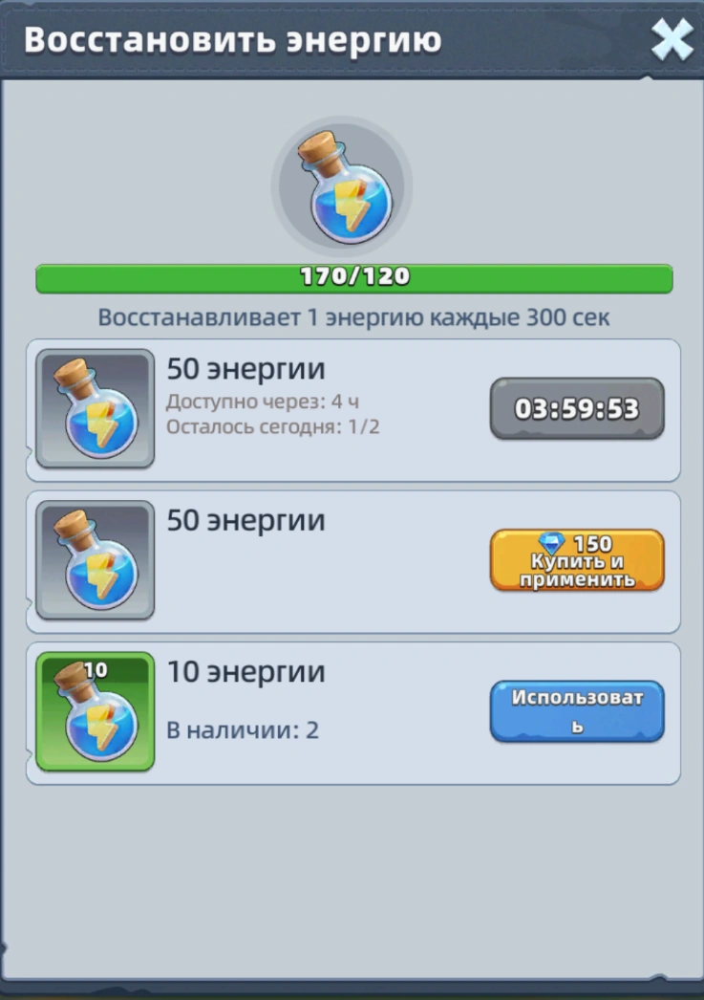
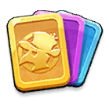
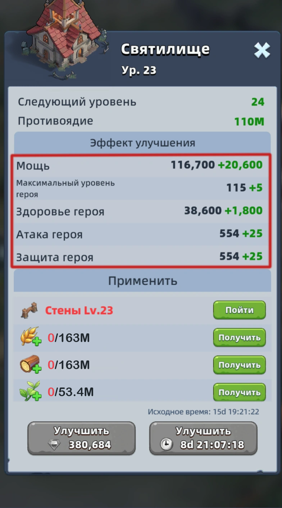

Фишки и мощь
Фишки и мощьФишки, о которых игра не рассказывает
Что реально делает аккаунт сильнее, а что только раздувает цифру мощи. Какие здания качать первыми, куда тратить алмазы и что делать каждый день за 10 минут.


Держи молоток
Достроил — не нажимай на молоток до нужного дня Дуэли. Очки дают за нажатие.
Копи сокола
Задания сокола сдавай в дни Дуэли, когда за них дают очки: пн, ср, пт.

2 флакона энергии в день
Бесплатные, по 50 энергии. Не выпил до конца дня — сгорели.
Алмазы — на героев
Найм героев — лучшее, на что их тратить. Ускорять стройку в первые дни — нет.
Дела на каждый день — 10 минут
Галочки сохраняются в твоём браузере. Новый игровой день — в 05:00 МСК (00:00 по игре).
Фишки, которые дают преимущество

Разведка перед боссом
Перед ударом по Королю демонов разведай любую цель. Включится «Боевое безумие» — проверь, что оно горит, и бей.
Король демонов сокращает путь
Если отряд долго идёт куда-то далеко, удар по Королю демонов делает дорогу туда и обратно не дольше 30 секунд.

Фиолетовые перчатки на босса
Фиолетовые перчатки 30 уровня дают +6% урона по монстрам и на боссе часто сильнее золотых. Две пары не разбирай. Почему.

Двойные очки
Трать ресурсы дня Дуэли в те 4 часа Битвы на выживание, когда тема совпадает. Очки идут в оба события сразу.

Золото — во вторник
Золотой караван = 100 000 очков Дуэли (как 2 000 минут ускорений стройки). Золотая секретная операция — 75 000.

Сундуки ворона — в среду
Сундук снаряжения ворона 7 уровня в среду = 810 000 очков Дуэли.

Титул министра — до запуска
Титул ускоряет только то, что запущено после его получения. Сначала получи титул, потом запускай стройку.

Облик «Ворон Чёрная крепость»
+1% урона по монстрам просто за то, что он есть, и +5%, если он надет.

Магазин за медали славы
Покупай только чертежи снаряжения. Сундуки реликвий и универсальные фрагменты там невыгодны.
Энергия: как не терять
Энергия сама восстанавливается по 1 единице раз в 5 минут («каждые 300 сек»). Флаконом её можно поднять выше максимума — на скрине 170 при максимуме 120, так что пить бесплатный флакон можно, даже когда полоска полная.
Откроется окно «Восстановить энергию».
«Осталось сегодня: 1/2». Следующий бесплатный флакон — через 4 часа после предыдущего.
До конца игрового дня (05:00 МСК) неиспользованные бесплатные флаконы сгорают.

От чего растёт мощь — и что из этого настоящая сила
| Часть мощи | Что её поднимает | Делает сильнее в бою? |
|---|---|---|
| Здания | Уровни зданий | Почти нет — в основном раздувает цифру. Кроме Святилища и статуй фракций. |
 Исследования Исследования | Уровни исследований | Да, навсегда |
 Герои | Уровни, звёзды, навыки, снаряжение | Да, главное |
 Солдаты Солдаты | Обученные солдаты (погибшие — минус) | Да, второе по важности |
| Выжившие | Наём и прокачка выживших | Больше ресурсов и скорости |
 Ворон Ворон | Уровень, снаряжение, эпиграфы | Да, на все отряды сразу |
Что даёт больше мощи за 1 млн ресурсов
| Солдаты | ≈117 000–129 000 |
| Первые 10 уровней здания | ≈3 111 |
| Уровни 11–20 | ≈213 |
| Уровни 21–30 | ≈40 |
Что это значит
Нужно быстро поднять цифру (например, к событию на мощь) — обучай солдат и докачай дешёвые первые уровни второстепенных зданий.
Нужна настоящая сила — герои, исследования, солдаты, ворон.
Один полностью прокачанный золотой герой весит больше, чем Святилище 30 и Лаборатория 30 вместе.
Какие здания качать первыми
Ни одно здание не может быть выше него, и от него зависит, до какого уровня поднимаются герои. В окне улучшения так и написано: «Максимальный уровень героя +5».
Внизу — что нужно для следующего уровня: здания (красным — чего не хватает, кнопка «Пойти» ведёт к нему) и ресурсы (кнопка «Получить»). Это и есть твой список дел.
Она нужна для большинства его улучшений. Запускай её в тот же час, что и Святилище, — тогда ни один таймер не ждёт другого.
Даёт бесплатное ускорение каждой стройки. Особенно ценна до 15 уровня Святилища — держи её на уровне Святилища.
Травы — главный дефицит: на них идут стройка, исследования и снаряжение.
Она даёт камни снаряжения.

Что открывается на каком уровне Святилища
| Святилище | Что появляется |
|---|---|
| 4 | Отряд 1, Стены, Мастерская снаряжения, Таверна |
| 5 | Мастерская противоядия, Плавильня, Ткацкая мастерская |
| 6 | Полигон, Казармы, Соколиная башня, Зал альянса |
| 7 | Лаборатория, Лазарет, Гнездо ворона, Арена |
| 8 | Сторожевая башня, Отряд 2, Король демонов |
| 9 | Центр тайных операций (секретные операции) |
| 11 | Конюшня (караваны) |
| 15 | Мастерская ворона, Зал чести |
| 20 | Отряд 3 |
Отряд 4 даёт месячный пропуск (платная подписка на 30 дней).
Исследования и солдаты
Порядок исследований
Самая дешёвая ветка, ускоряет стройку и исследования.
Даёт больше очков Дуэли и открывает сундуки 4–9. Подробно.
Больше ресурсов.
Сначала то, что усиливает отряд 1.
Открывает самых сильных солдат (T10).
Солдаты
Три дешёвых Полигона быстро учат солдат среднего уровня (T4), а потом их повышаешь до лучших. Так экономится 6–7 часов за круг.
Старых слабых солдат переводи в сильных — дешевле и быстрее.
Лечи вовремя, особенно перед КвК.
Король демонов, караваны, Гонка за эликсиром и арена — почти без потерь солдат. Это безопасные награды.
Куда тратить алмазы и что покупать
| Покупка | Стоит? |
|---|---|
| Найм героев | Да, в первую очередь. |
 «Направленное перемещение» «Направленное перемещение» | Только в VIP-магазине — там намного дешевле, чем в обычном. |
 Ускорения стройки в первые дни Ускорения стройки в первые дни | Нет. Первые уровни строятся секунды и минуты. |
| Энергия за алмазы | Только если очень нужно к событию. |
Если платишь деньги — что выгодно. Месячный пропуск (VIP на 30 дней, бонусы к стройке, сбору, атаке и защите, четвёртый отряд). Ежедневный набор со снаряжением и эссенцией ворона. Первая покупка — в ней Марлена.
Что невыгодно. Покупать «Алмазы» в магазине — там худшая цена. И раздел «Наборы» без разбора.
Чего не делать
Цифра растёт, а армия нет. В бою решают герои, солдаты, исследования.
Те же ресурсы в свой день Дуэли принесли бы альянсу победу.
Нет помощи, подарков, магазина альянса. Святилищу с 7 уровня нужен Зал альянса.
Город с полными складами без щита — первая цель для набегов.
Сначала танк должен выживать, иначе Марлена не успеет ударить.
Танку меч не нужен. Камни — в оружие героя урона.